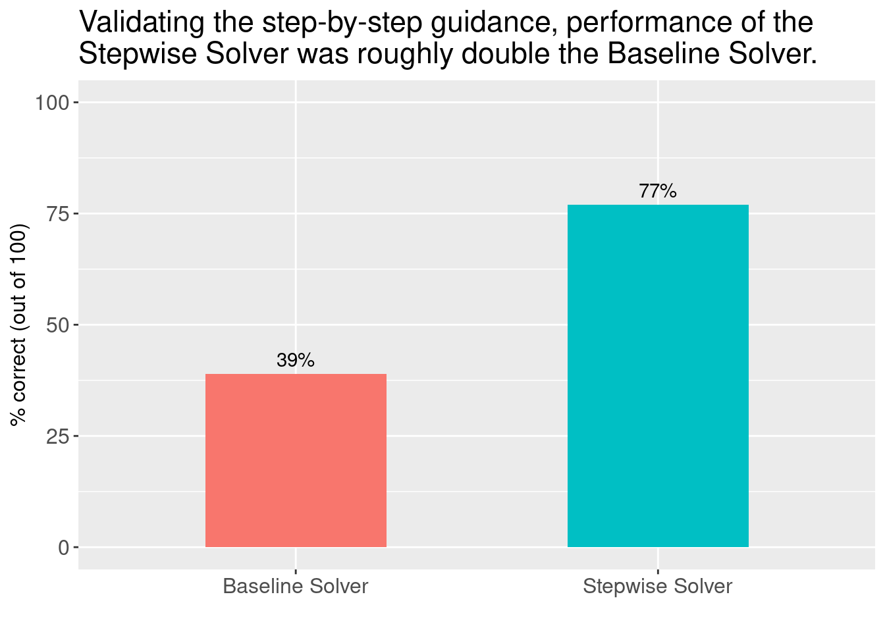

R
library(reticulate)
library(tidyverse)
# Add OpenAI key to environment
py_run_string("import os")
py_run_string(paste0("os.environ['OPENAI_API_KEY'] = '", Sys.getenv('OPENAI_API_KEY'), "'"))Imagine you’re developing an AI Math Tutor application: You have a set of math questions that student users can answer, along with the correct answers to those questions. Students will sometimes get stuck answering multi-step problems, and in those situations you want them to be able to ask an AI tutor for help. An AI Tutoring interaction that can be helpful is one where a student asks the tutor for step-by-step guidance.

In this blog post, I show how a “step-by-step guidance” feature could be developed using GPT and prompt engineering, and how this guidance can be validated. As a demonstration, I use a multi-step math problem that I’ve found GPT-3.5 often struggles to answer. I show how this step-by-step guidance can be validated by asking GPT to solve the problem using its own instructions and then comparing its “stepwise” performance against the performance of a baseline model.
R
library(reticulate)
library(tidyverse)
# Add OpenAI key to environment
py_run_string("import os")
py_run_string(paste0("os.environ['OPENAI_API_KEY'] = '", Sys.getenv('OPENAI_API_KEY'), "'"))python
import pandas as pd
import numpy as np
import ujson as json
import inspect
import textwrap
from multiprocessing.pool import ThreadPool
pool = ThreadPool()In order to use parallelization within an interactive notebook using the multiprocessing package, it’s necessary to write the python functions to-be-parallelized to disk and import them. I’ll import the functions here, and introduce these functions later in the post as I use them.
python
from prompt_functions import get_response, baseline_solver, step_generator, stepwise_solverAs a test case, I’ll use a math problem that I’ve found GPT has some difficulty solving. This problem comes from the GSM8K dataset. Although it’s a grade school math problem which should be very easy, it requires multiple reasoning steps. If any one step is wrong, the final answer is likely to be incorrect.
python
question = 'Gail has two fish tanks. The first tank is twice the size of the second tank. There are 48 gallons of water in the first tank. She follows the rule of one gallon of water per inch of fish. If she keeps two-inch fish in the second tank and three-inch fish in the first tank, how many more fish would Gail have in the first tank than the second tank if one of the first tank fish eats another?'
print(textwrap.fill(question, width=80))Gail has two fish tanks. The first tank is twice the size of the second tank.
There are 48 gallons of water in the first tank. She follows the rule of one
gallon of water per inch of fish. If she keeps two-inch fish in the second tank
and three-inch fish in the first tank, how many more fish would Gail have in the
first tank than the second tank if one of the first tank fish eats another?In order to generate steps that an AI Tutor could suggest to a student, I’ll first get GPT to “discover” how to correctly solve the problem on its own. I’ll use the baseline_solver() function, which implements a simple chain-of-thought prompt.
python
print(inspect.getsource(baseline_solver))def baseline_solver(question):
instructions = "Solve the math problem delimited by triple backticks."
user_content = f"```{question}```\nLet's work this out in a step by step way to be sure we have the right answer"
msg = [
{"role": "system", "content": instructions},
{"role": "user", "content": user_content}
]
solution = get_response(msg=msg, temp=0.5)
answer = identify_final_answer(solution)
return {
'is_correct': answer == '3',
'solution': solution,
'question': question,
'answer': answer
}I’ll give it 100 attempts to solve the problem.
python
try: # Read from disk if I've done this already
df_baseline = pd.read_json('baseline_solver_results.ndjson')
except:
baseline_results = pool.map(baseline_solver, 100*[question])
df_baseline = pd.DataFrame(baseline_results, columns=['is_correct', 'solution', 'question', 'answer'])
df_baseline.to_json('baseline_solver_results.ndjson', orient='records')Using correct answers from the 100 attempts above, I’ll pick a few examples and ask GPT to synthesize and generalize the steps.
For this task I’ll use the step_generator() function, which asks GPT to synthesize the steps from three different solutions provided as input. It also asks GPT to remove any calculations from those steps, which is important for an AI Tutor – after all, we don’t want to give away the answer!
python
print(inspect.getsource(step_generator))def step_generator(solutions):
instructions = '''
You're given three different solutions to a single math problem, delimited by
triple hashtags. Synthesize the solutions into a final set of steps to solve
the problem. Remove any calculations from the instructions, leaving only the
steps.
'''
user_content = f'''
###
Solution 1:
{solutions[0]}
---
Solution 2:
{solutions[1]}
---
Solution 3:
{solutions[2]}
###
Synthesize the three solutions above. Remove any calculations from the
instructions, leaving only the steps.
'''
msg = [
{"role": "system", "content": instructions},
{"role": "user", "content": user_content}
]
return get_response(msg=msg, temp=0.3)Here’s what the final set of steps looks like:
python
try: # Read from disk if I've done this already
f = open("steps.txt", "r")
steps = f.read()
print(steps)
except:
solutions = df_baseline[df_baseline['is_correct'] == True]['solution'].values[0:3]
steps = step_generator(solutions)
f = open("steps.txt", "w")
f.write(steps)
f.close()
print(steps)To solve the problem, follow these steps:
1. Find the size of the second tank by dividing the size of the first tank by 2.
2. Determine the number of fish that can be kept in each tank based on the rule of one gallon of water per inch of fish.
3. Calculate the number of fish that can be kept in the second tank by dividing the size of the second tank by 2.
4. Calculate the number of fish that can be kept in the first tank by dividing the size of the first tank by 3.
5. Subtract 1 from the number of fish in the first tank to account for one fish eating another.
6. Subtract the number of fish in the second tank from the number of fish in the first tank to find the difference.
7. Determine the final answer, which is the difference in the number of fish between the two tanks.Next, I’ll validate the steps generated above using stepwise_solver(), a function that asks GPT to solve the problem using the steps provided. I expect that providing GPT with the steps above will improve its performance by a significant margin.
python
print(inspect.getsource(stepwise_solver))def stepwise_solver(question, steps):
instructions = "Solve the math problem in triple backticks, using the steps provided in triple hashtags."
user_content = f"```{question}```\n\n###{steps}###"
msg = [
{"role": "system", "content": instructions},
{"role": "user", "content": user_content}
]
solution = get_response(msg=msg, temp=0.5)
answer = identify_final_answer(solution)
return {
'is_correct': answer == '3',
'solution': solution,
'question': question,
'steps': steps,
'answer': answer
}python
try: # Read from disk if I've done this already
df_stepwise = pd.read_json('stepwise_solver_results.ndjson')
except:
stepwise_results = pool.starmap(stepwise_solver, zip(100*[question], 100*[steps]))
df_stepwise = pd.DataFrame(stepwise_results, columns=['is_correct', 'solution', 'question', 'steps', 'answer'])
df_stepwise.to_json('stepwise_solver_results.ndjson', orient='records')Here we can see that by providing the GPT solver with steps derived from correct solutions, performance was almost doubled (from 39% to 77% correct responses). This provides important validation for an AI Tutor with “step-by-step guidance” functionality, because now we know that by following these steps the student would be likely to arrive at the correct answer.
python
print(f'''
Baseline solver: {round(np.mean(df_baseline['is_correct'])*100)}% correct
Stepwise solver: {round(np.mean(df_stepwise['is_correct'])*100)}% correct
''')
Baseline solver: 39% correct
Stepwise solver: 77% correctR
tibble(`Baseline Solver` = 39, `Stepwise Solver` = 77) %>%
pivot_longer(everything()) %>%
ggplot(aes(x = name, y = value, fill = name)) +
geom_col(width = 0.5) +
geom_text(aes(x = name, y = value, label = paste0(round(value), '%')), vjust=-0.5) +
labs(
x = '',
y = '% correct (out of 100)',
title = 'Validating the step-by-step guidance, performance of the\nStepwise Solver was roughly double the Baseline Solver.'
) +
ylim(0, 100) +
theme(legend.position = "none",
text = element_text(size=14),
axis.text.x = element_text(size=12),
axis.text.y = element_text(size=12),
axis.title.x = element_text(size=12),
axis.title.y = element_text(size=12))
Having generated and validated the step-by-step guidance, we can now begin to imagine what the user interaction would look like. It could take the form of a single interaction, where a student asks for help and the AI Tutor provides all of the steps at once.
python
print(steps)To solve the problem, follow these steps:
1. Find the size of the second tank by dividing the size of the first tank by 2.
2. Determine the number of fish that can be kept in each tank based on the rule of one gallon of water per inch of fish.
3. Calculate the number of fish that can be kept in the second tank by dividing the size of the second tank by 2.
4. Calculate the number of fish that can be kept in the first tank by dividing the size of the first tank by 3.
5. Subtract 1 from the number of fish in the first tank to account for one fish eating another.
6. Subtract the number of fish in the second tank from the number of fish in the first tank to find the difference.
7. Determine the final answer, which is the difference in the number of fish between the two tanks.Or the AI Tutor could provide the steps one at a time – i.e., one step is given each time the student asks for help.
python
# Print step 1
print(steps.split('\n')[2])1. Find the size of the second tank by dividing the size of the first tank by 2.python
# Print step 2
print(steps.split('\n')[3])2. Determine the number of fish that can be kept in each tank based on the rule of one gallon of water per inch of fish.Providing steps one-at-a-time could be implemented as part of a “progressive” hint system. In an educational math game, for example, the student could receive full points for giving a correct answer with zero assistance, and the number of points earned could be reduced every time they ask for a step hint.
In this implementation I’ve deliberately removed the results from each step. But we could imagine an interaction where the AI first gives a step, and then optionally provides the result obtained at that step. This could help the student figure out at which step they’re making a mistake.